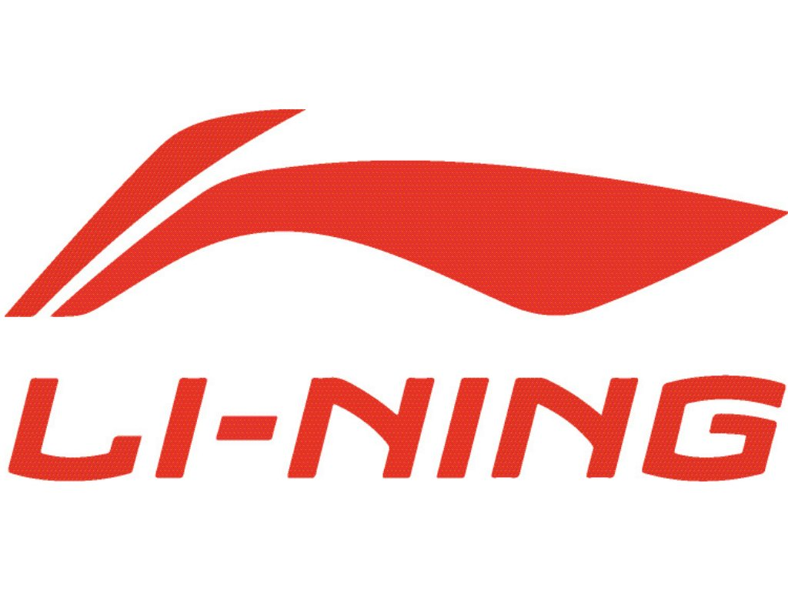
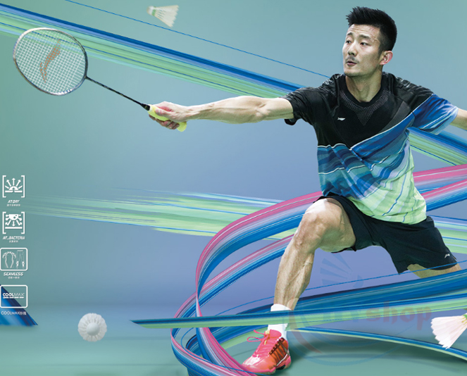

Hãng vợt cầu lông Lining
Review
Hãng vợt cầu lông nổi tiếng này chuyên sản xuất các dụng cụ thể thao, đồ tập thể thao lớn của Trung Quốc và sản phẩm phụ kiện cầu lông là 1 trong những dòng sản phẩm trọng điểm của hãng Lining. Hãng vợt cầu lông Lining được thành lập vào năm 1990
tại Trung Quốc với mục tiêu ban đầu là cung cấp các sản phẩm thể thao cho các VĐV Trung Quốc một thương hiệu quốc gia để sử dụng tại các kỳ thế vận hội. Các sản phẩm vợt cầu lông Lining nổi trội với mẫu mã đa dạng được chia thành nhiều dòng
vợt khác nhau phù hợp với từng lối chơi. Đặc biệt hãng vợt cầu lông nổi tiếng này còn rất trú trọng vào thiết kế màu sắc và ngoại hình cho cây vợt. Cũng giống như Yonex, hãng vợt cầu lông Lining cũng tài trợ cho rất nhiều các VĐV và các giải
đấu lớn trên thế giới. Đặc biệt hầu hết các VĐV Trung Quốc đều nhận được sự tài trợ lớn từ hãng Lining, từ các giải đấu trong nước cũng như quốc tế.

Một số cây vợt cầu lông nổi bật của Lining
- Vợt cầu lông Lining Aeronaut 7000i xanh tím là cây vợt nhẹ, nặng đầu, phù hợp đánh nhanh trên lưới trong đánh đôi. Vợt được các VĐV đôi nam và đôi nam nữ hàng đầu thế giới sử dụng như: Huang Yaqiong và Liu Yuchen sử dụng. Các bạn có lực cổ
tay trung bình khá trở lên vẫn có thể chơi tốt cây vợt này.
- Vợt cầu lông Lining Aeronaut 7000i hồng là cây vợt siêu nhẹ nhưng có độ nặng đầu (rất nặng). Phù hợp với các bạn nữ đánh lưới bên cạnh đó vẫn cho những cú đập cầu uy lực, trợ lực tốt cho người chơi. 7000i có 2 phiên bản màu sắc Hồng và Xanh
dành riêng cho nam và nữ.
- Vợt cầu lông Lining Tectonic 7i là cây vợt cầu lông dành cho nữ đánh chuyên đôi, vợt có thân cứng, điểm cân bằng cao giúp khả năng bắt lưới và trợ lực tối đa. Các bạn nữ có trình độ khá trở lên sẽ phát huy tối đa sức mạnh của cây vợt này.